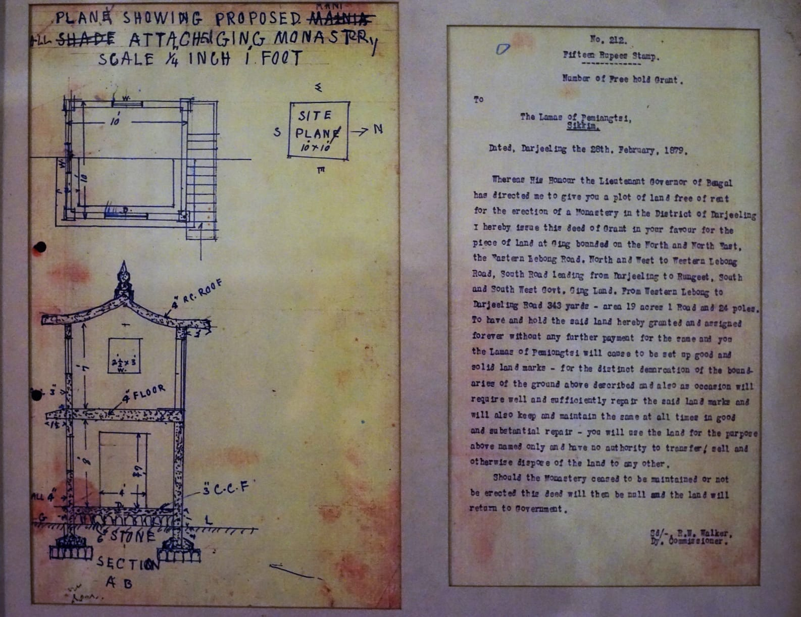
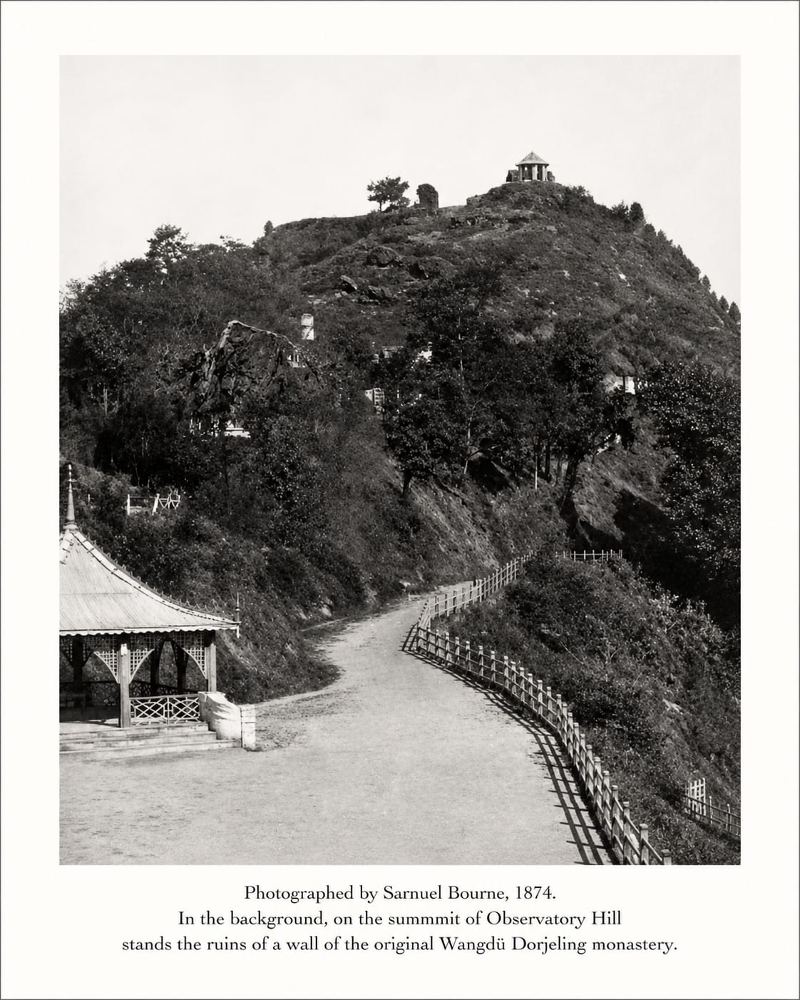
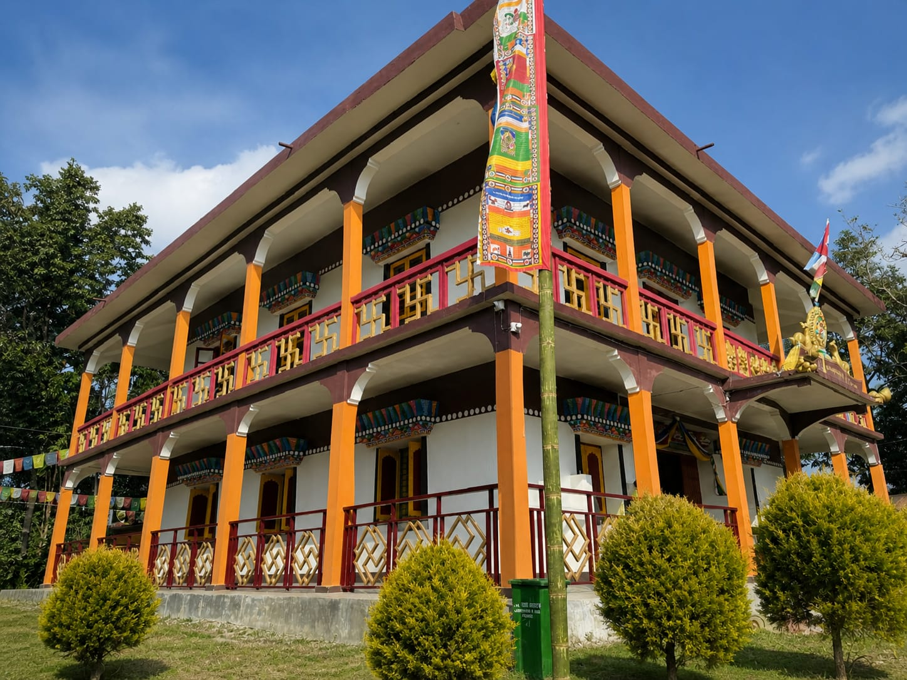
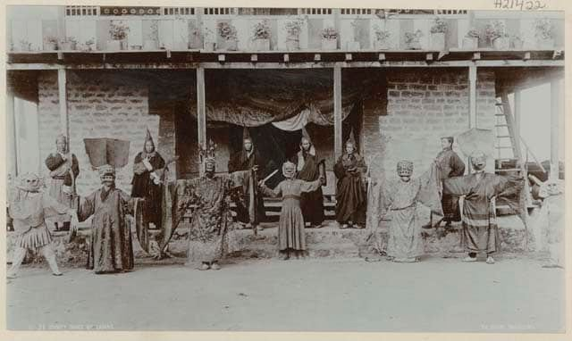
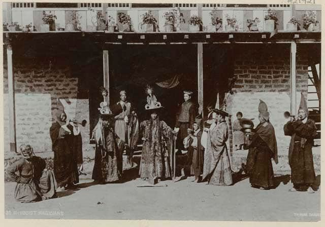
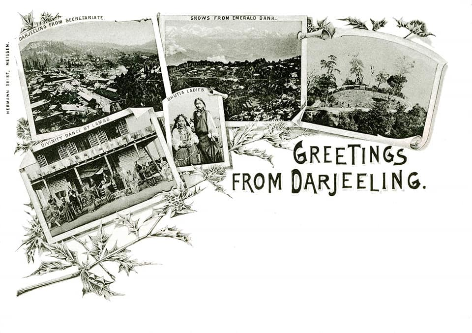
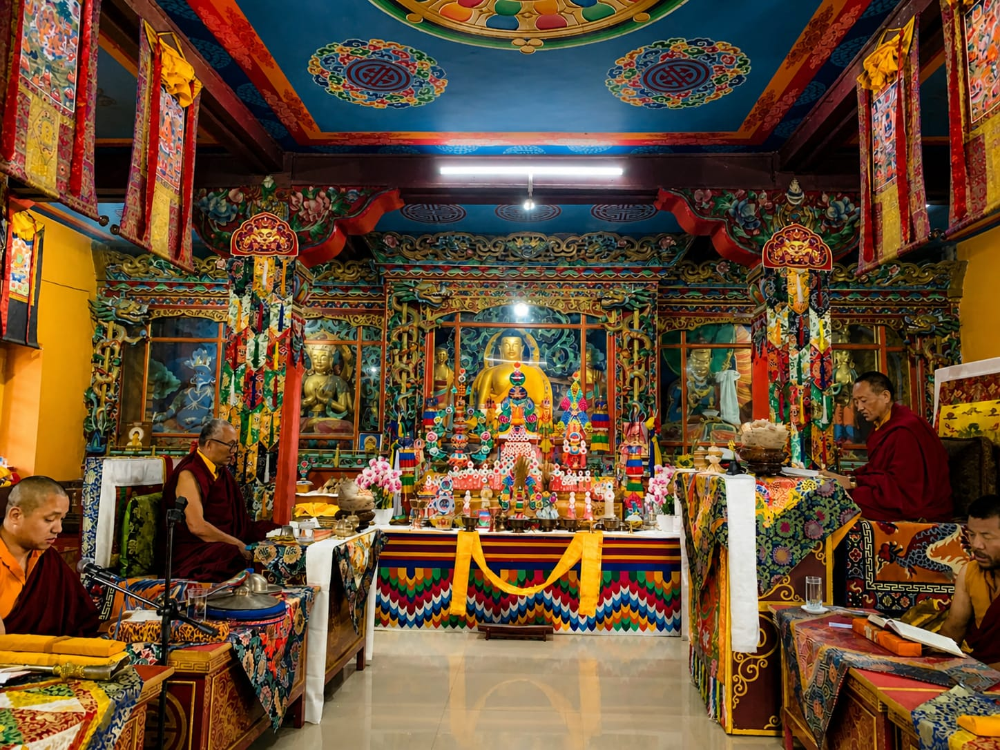
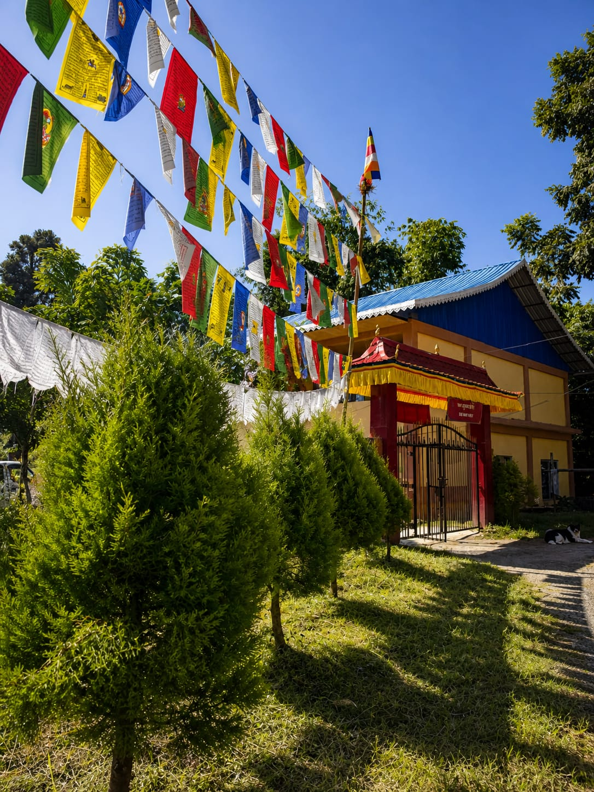

Gallery
The images below include both archival records and contemporary views of the monastery. Where possible, captions provide context and approximate dates.
Archival Records

Freehold land grant issued by R. W. Walker, Deputy Commissioner of Darjeeling, dated 28 February 1879, to the lamas of Pemayangtse, Sikkim, for the establishment of the monastery at Ging.

Photograph by Samuel Bourne, 1874, depicting Observatory Hill with the ruins of the original Wangdü Dorjeling monastery visible on the summit.

Exterior view of Sangchen Thongdrol Ling (Ging Gompa), showing the main structure within its hillside setting.

Photograph titled “Divinity Dance by Lamas” by Theodor Paar, Darjeeling, c. 1899, associated with ritual performance traditions connected to Ging Monastery.

Additional archival photograph by Theodor Paar, Darjeeling, c. 1899, depicting ritual performers and monastery frontage associated with Ging Monastery.

Colonial-era “Greetings from Darjeeling” print incorporating imagery associated with Ging Monastery, reflecting its presence within the visual culture of Darjeeling during the late nineteenth to early twentieth century.

Interior shrine or ritual space within the monastery, reflecting ongoing liturgical practice in the Nyingma tradition

Approach pathway and surrounding landscape of Ging Gompa, illustrating its location within the Ging–Lebong area